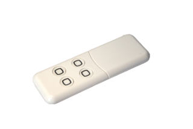
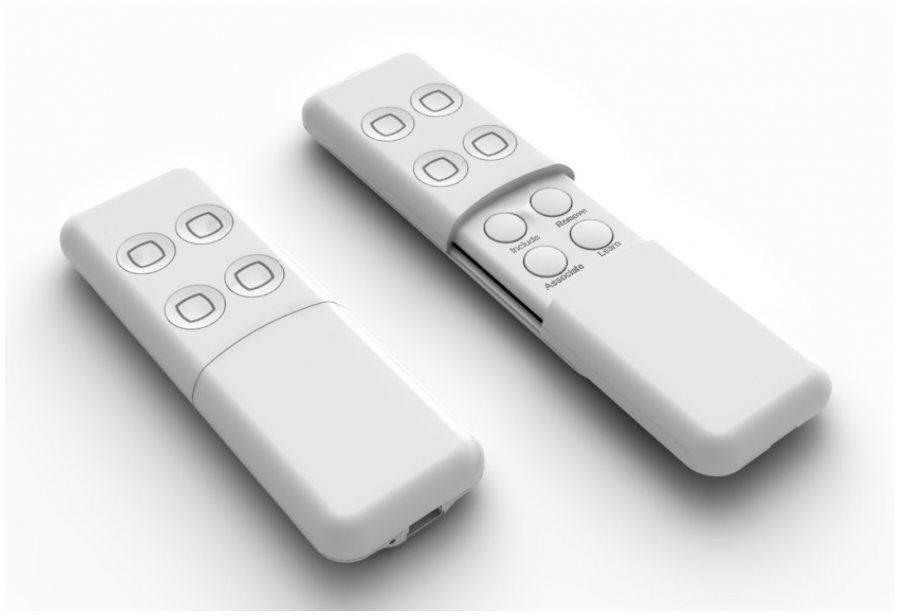

AEO_MREM
Firmware Version : 1.0 |
 |
Quick StartR This device is a Z-Wave Remote Control. Use Network Management Buttons to include and exclude devices to the remote controls network and use the LEARN button to include the minimote into a different network. Pushing the LEARN button for 5 sec will wake up the device. Please refer to the chapters below for detailed information about all aspects of the products usage. |
Product description
The Aeon Labs mini remote control can control a variety of Z-Wave compatible devices such as switches, dimmers, window blinds and motion sensors. The device can include and exclude devices, group them and set and release associations. The mini remote only offers four control buttons for scene selection. Behind a slider there are four more buttons for Z-Wave network control. A non-replaceable but rechargeable battery powers the remote control. Recharging is done on a conventional USB bus using the charging cable provided. The product is in the color white.
Installation Guidelines
The device is ready for use. In case there are no LED signals when hitting the buttons the device needs to be recharged using the USB cable provided.

Behavior within the Z-Wave network
I On factory default the device does not belong to any Z-Wave network. The device needs to join an existing wireless network to communicate with the devices of this network. This process is called Inclusion. Devices can also leave a network. This process is called Exclusion. Both processes are initiated by the primary controller of the Z-Wave network. This controller will be turned into exclusion respective inclusion mode. Please refer to your primary controllers manual on how to turn your controller into inclusion or exclusion mode. Only if the primary controller is in inclusion or exclusion mode, this device can join or leave the network. Leaving the network - i.e. being excluded - sets the device back to factory default.
If the device already belongs to a network, follow the exclusion process before including it in your network. Otherwise inclusion of this device will fail. If the controller being included was a primary controller, it has to be reset first.
Once the primary controller is turned into inclusion mode press the "Learn" button.
Operating the device
The Minimote has 4 scene control buttons. A scene defines a certain switching state for a number of devices connected to this scene. A single click on the scene button will then turn all these devices into the desired switching state. Below the cover there are 4 dedicated buttons for network management. The Minimote can manage a Z-Wave network as primary controller. However it is also possible to reconfigure all 8 buttons for other functions e.g. activating a scene in a different controller.
Wakeup Intervals - how to communicate with the device?
W This device is battery operated and turned into deep sleep state most of the time to save battery life time. Communication with the device is limited. In order to communicate with the device, a static controller C is needed in the network. This controller will maintain a mailbox for the battery operated devices and store commands that can not be received during deep sleep state. Without such a controller, communication may become impossible and/or the battery life time is significantly decreased.
This device will wakeup regularly and announce the wakeup state by sending out a so called Wakeup Notification. The controller can then empty the mailbox. Therefore, the device needs to be configured with the desired wakeup interval and the node ID of the controller. If the device was included by a static controller this controller will usually perform all necessary configurations. The wakeup interval is a tradeoff between maximal battery life time and the desired responses of the device.
The device can be woken up manually by pressing the "Learn" button for 5 seconds.
It is possible to set the node ID to 255 to send wakeup notifications as broadcast. In this mode device takes more time to go to sleep and drains battery faster, but can notify all it's direct neighbors about a wakeup.
Node Information Frame
NI The Node Information Frame is the business card of a Z-Wave device. It contains information about the device type and the technical capabilities. The inclusion and exclusion of the device is confirmed by sending out a Node Information Frame. Beside this it may be needed for certain network operations to send out a Node Information Frame.
A single click at the "Learn" button for 5 seconds sends a Node Information Frame.
Associations
A Z-Wave devices control other Z-Wave devices. The relationship between one device controlling another device is called association. In order to control a different device, the controlling device needs to maintain a list of devices that will receive controlling commands. These lists are called association groups and they are always related to certain events (e.g. button pressed, sensor triggers, ...). In case the event happens all devices stored in the respective association group will receive a common wireless command.
Association Groups:
| 1 | Scene 1 (max. nodes in group: 5) |
| 2 | Scene 2 (max. nodes in group: 5) |
| 3 | Scene 3 (max. nodes in group: 5) |
| 4 | Scene 4 (max. nodes in group: 5) |
Set and unset associations to actuators
Associations can be assigned and remove either via Z-Wave commands or using the device itself.
SA- Press the scene button the new device shall be associated with and keep this button pressed.
- Issue a Node Information Frame from the target device. This is usually done by single or triple click a button. Please refer to the manual of this device how to issue a NIF.
- Before releasing the scene button turn the device into the desired state. After the button is released the minimote will detect the status of the device and store it in the scene.
To delete a device from a scene repeat the process for the scene where the device was already associated with.
Special Functions as Z-Wave Controller
As long as this device is not included into a Z-Wave network of a different controller it is able to manage its own Z-Wave network as primary controller. As a primary controller the device can include and exclude other devices in its own network, manage associations, and reorganize the network in case of problems. The following controller functions are supported:
Include other device in own network
CI Communication between two Z-Wave devices only works if both belong to the same wireless network. Joining a network is called inclusion and is initiated by a controller. The controller needs to be turned into the inclusion mode. Once in this inclusion mode the other device needs to confirm the inclusion - typically by pressing a button.
Click the "Inclusion" button to start the inclusion mode.
If inclusion of a new device fails, first exclude it from its previous network or reset it.
If current primary controller in your network is in special SIS mode this and any other secondary controller can also include and exclude devices.
To become primary a contoller have to be resetted and then include a device.
Exclude device from network
The primary controller can exclude devices from the Z-Wave network. During exclusion the relationship between the device and the network of this controller is terminated. No communication between the device and other devices still in the network can happen after a successful exclusion. The controller needs to be turned into the exclusion mode. Once in this exclusion mode the other device needs to confirm the exclusion - typically by pressing a button.
Attention: Removing a device from the network means that it is turned back into factory default status. This process can also exclude devices from it's previous network.
Click the "Exclusion" button to start the exclusion mode.
Attention: Removing a device from the network means that it is turned back into factory default status. This process can also exclude devices from its previous network.
Shift Primary Role to a different Controller
The device can hand over its primary role to another controller and become secondary controller.
The primary shift is initiated on the device by pressing the "Learn" button.
Set association between two device in Z-Wave network
CA The controller is able to set association between two other devices in the network. The controller is turned into an association mode both devices are announced by pressing a button. After both association partners are known the controller will perform all necessary steps to set the association.
- Press "Association" button
- Issue a Node Information Frame from the target device. This is usually done by single or triple click a button. Please refer to the manual of this device how to issue a NIF.
- Issue a Node Information Frame from the device where the association will be set. This is usually done by single or triple click a button. Please refer to the manual of this device how to issue a NIF.
Update Network Information
As a battery operated controller the device will not automatically received updates about the network structure. This process should be initiated when the primary controller has included/excluded devices and it will result in an update of the network information in the battery operated controller. This prevents wrong communication that may cost battery life and delay other communication.
Press the button "Association" for 10 seconds to update the network.
it is possible that a network update fails if the network was changed too much after the last update. In this case the the device need to be reincluded. Re-Inclusion is similar to a normal inclusion. Its just not needed to exclude the device before. Re-Inclusion makes sure that the node ID of the device remails unchanged.
Reset the Controller
Press the buttons "Association" and "Learn" together for 10 seconds to reset the device.
Configuration Parameters
Z-Wave products are supposed to work out of the box after inclusion, however certain configuration can adapt the function better to user needs or unlock further enhanced features.
IMPORTANT: Controllers may only allow to configure signed values. In order to set values in the range 128 … 255 the value sent in the application shall be the desired value minus 256. For example: to set a parameter to 200 it may be needed to set a value of 200 minus 256 = minus 56. In case of two byte value the same logic applies: Values greater than 32768 may needed to be given as negative values too.
| Value | Description |
|---|---|
| 0 | Factory Default (Default) |
| 1 | Scene Mode |
| 2 | Add Mode |
| 3 | Remove Mode |
| 4 | Association Mode |
| 5 | Learn Mode |
| Value | Description |
|---|---|
| 0 | Factory Default (Default) |
| 1 | Scene Mode |
| 2 | Add Mode |
| 3 | Remove Mode |
| 4 | Association Mode |
| 5 | Learn Mode |
| Value | Description |
|---|---|
| 0 | Factory Default (Default) |
| 1 | Scene Mode |
| 2 | Add Mode |
| 3 | Remove Mode |
| 4 | Association Mode |
| 5 | Learn Mode |
| Value | Description |
|---|---|
| 0 | Factory Default (Default) |
| 1 | Scene Mode |
| 2 | Add Mode |
| 3 | Remove Mode |
| 4 | Association Mode |
| 5 | Learn Mode |
| Value | Description |
|---|---|
| 0 | Factory Default (Default) |
| 1 | Scene Mode |
| 2 | Add Mode |
| 3 | Remove Mode |
| 4 | Association Mode |
| 5 | Learn Mode |
| Value | Description |
|---|---|
| 0 | Factory Default (Default) |
| 1 | Scene Mode |
| 2 | Add Mode |
| 3 | Remove Mode |
| 4 | Association Mode |
| 5 | Learn Mode |
| Value | Description |
|---|---|
| 0 | Factory Default (Default) |
| 1 | Scene Mode |
| 2 | Add Mode |
| 3 | Remove Mode |
| 4 | Association Mode |
| 5 | Learn Mode |
| Value | Description |
|---|---|
| 0 | Factory Default (Default) |
| 2 | Add Mode |
| 3 | Remove Mode |
| 4 | Association Mode |
| 5 | Learn Mode |
Technical Data
| Explorer Frame Support | Yes |
| SDK | 4.50 beta |
| Device Type | Slave with routing capabilities |
| Generic Device Class | Binary Switch |
| Specific Device Class | Binary Power Switch |
| Routing | Yes |
| FLiRS | No |
| Firmware Version | 1.0 |